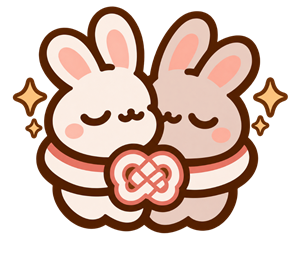
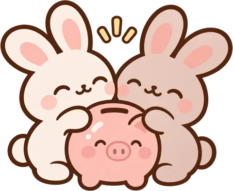
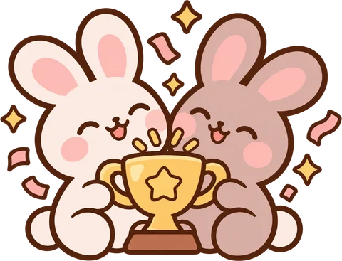

Caso de estudio / 02 · Personal Finance
Futari ふたり
De una hoja que había que cuadrar a mano a un mes que se cierra con un gesto.
- Rol
- Base de mi pareja; yo hice la reorganización, el rediseño, las ilustraciones y la sección de Viajes con IA.
- Mis cambios
- Rediseño, ilustraciones, estados vacíos, sección Viajes, PWA, accesibilidad y menú móvil
- Plataforma
- Web / PWA
- Periodo
- 3–4 nov 2026 (mi parte)
- Estado
- Uso privado en pareja
- Herramientas
- Claude Code (Viajes), ChatGPT (ilustración)

§ 1Contexto y reto
Muchas funciones, ninguna jerarquía
Mi pareja y yo llevábamos nuestras cuentas y ahorros en Notion, y actualizarlo era muy manual. Queríamos algo más visual e interactivo, así que mi pareja construyó la base de Futari. Yo me encargué de reorganizar cómo funciona, de rediseñarla, de ilustrarla y de construir con IA la sección de Viajes.
Cuando llegué, la app ya hacía mucho: patrimonio, cuentas, aportaciones, fondo común, huchas, gastos fijos y acumulativos, objetivos, simulador, historial y evolución. Pero todo estaba repartido sin un orden claro de importancia.
¿Cómo convertir un conjunto de herramientas financieras en una experiencia unificada, comprensible y pensada para dos?
La pregunta de diseño§ 2Lo que añadí
Viajes de principio a fin
Es la parte de Futari que diseñé y construí con IA: una sección entera para planificar un viaje en pareja sin salir de la app, del primer presupuesto a los gastos reales. Los importes van en euros y los viajes terminados se guardan en la barra lateral.
- Presupuesto por partidasVuelos, alojamiento, transporte… Cada partida tiene su estimado, lo pagado y la diferencia.
- Diario del viajeUn sitio para anotar qué pasó, junto al dinero.
- Registro de gastosLo que se gasta durante el viaje se apunta en el propio viaje.
- Dinero que sale de una huchaCada viaje puede pagarse con una hucha, sin hacer cuentas aparte.
- Estimado
- Lo que pensamos gastar
- Pagado
- Lo que ya hemos pagado
- Diferencia
- Lo que queda, en euros y en %

§ 3Identidad e ilustración
Finanzas en pareja que no parecen una hoja de cálculo
Quería una identidad cálida, ligeramente japonesa y precisa. «Futari» significa «dos personas» en japonés, y la mascota nació de un viaje a Japón.
Buscaba algo que evocara el dinero, como un gato de la suerte. Pasamos por un templo con conejitos de la abundancia y nos compramos las figuritas. Las convertí en la mascota, como recuerdo de ese viaje.

La parejaLa mascota principal. 
Estado vacíoAún no hay huchas: invita a crear la primera. 
LogroUn objetivo cumplido se celebra.
- Contorno cacao
- Formas redondeadas
- Estética sticker
- Transparencia real
- Acompañan, nunca sustituyen la información
Las ilustraciones las generé y refiné con ChatGPT bajo estas reglas; la dirección la puse yo.
§ 4Resultado y estado
En uso, solo para nosotros
Futari es de uso privado en pareja: la usamos mi pareja y yo, en web y como PWA. La usamos mes a mes, cuando reorganizamos las cuentas.
Sobre la base de mi pareja, lo que cambié yo: el rediseño, las ilustraciones, los estados vacíos, la sección de Viajes, la PWA, la accesibilidad y el menú móvil.